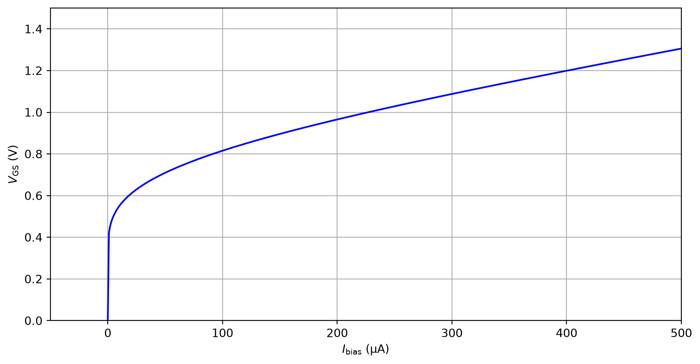
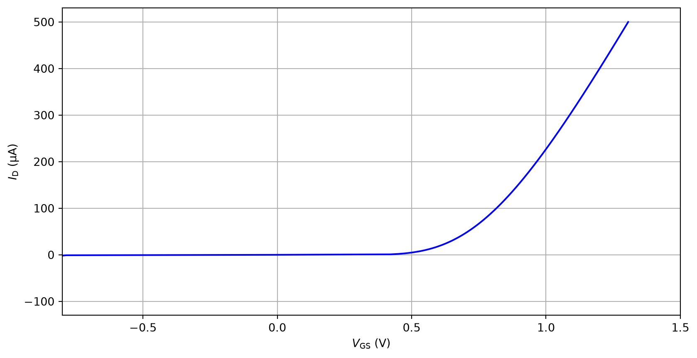
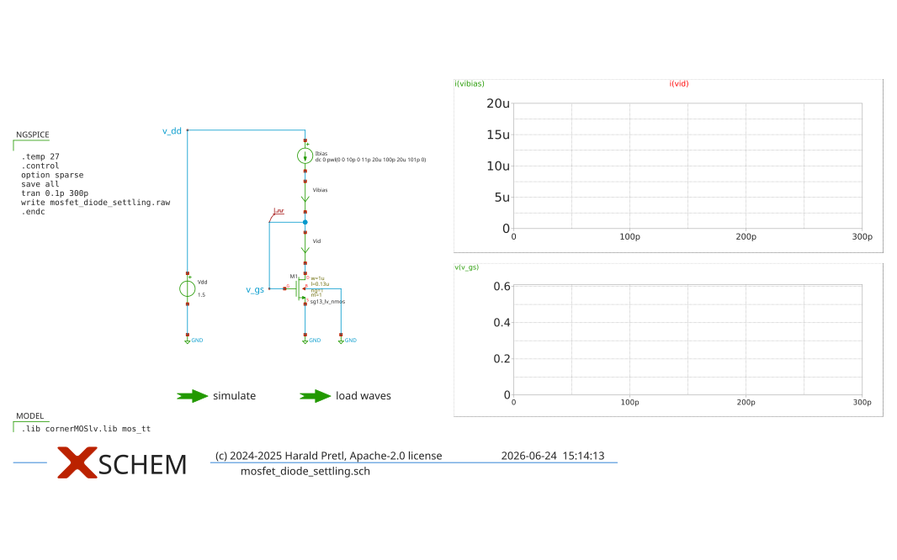
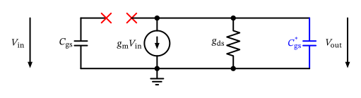
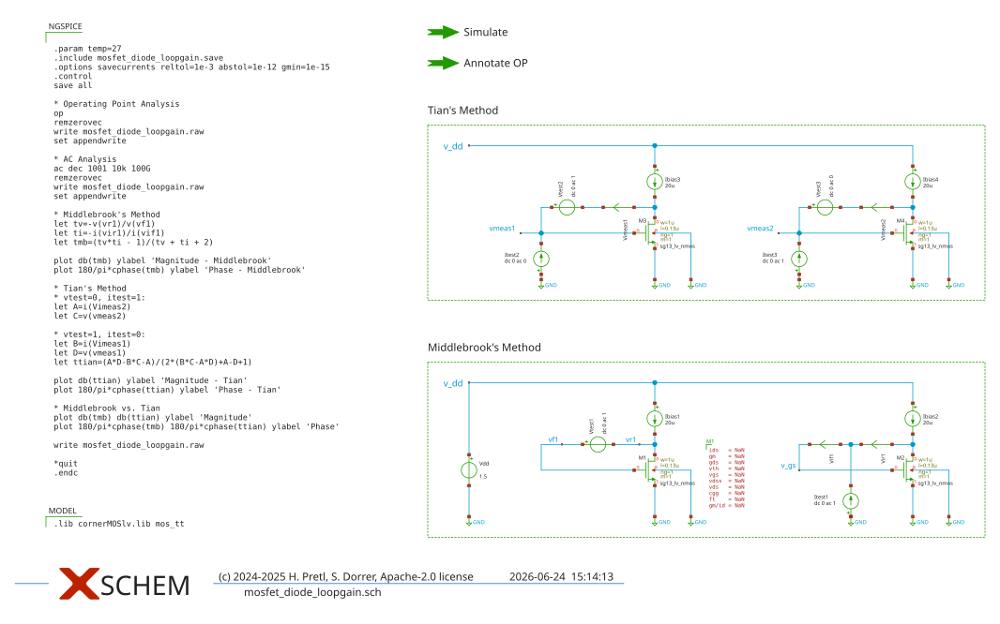
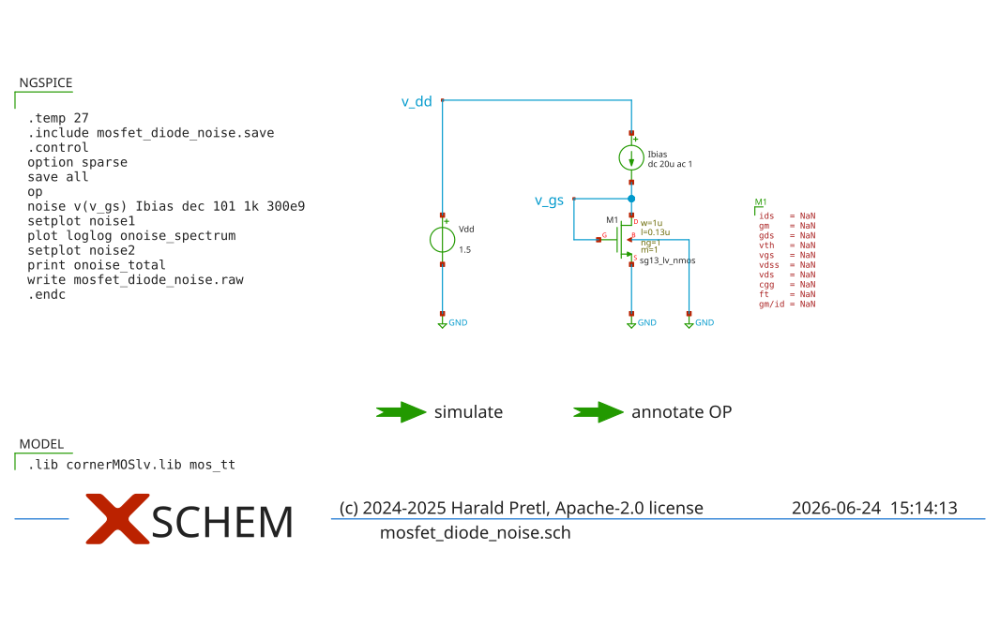

Analog (Integrated) Circuit Design
Figure 1: A MOSFET connected as a diode (drain shorted with gate).


Feedback in the MOSFET Diode
It is important to realize that this configuration employs a feedback loop for operation. The voltage at the drain of the MOSFET is sensed by the gate, and the gate voltage changes until \(I_\mathrm{D}\) is exactly equal to \(I_\mathrm{bias}\). In this sense this is probably the smallest feedback circuit one can build.
Exercise: MOSFET Diode Sizing
Please build a MOSFET diode circuit in Xschem where you use an LV NMOS, set \(I_\mathrm{bias} = 20\,\mu\text{A}\), \(L = 0.13\,\mu\text{m}\), and we want to use \(g_\mathrm{m}/I_\mathrm{D}= 10\) (often a suitable compromise between transistor speed and \(g_\mathrm{m}\) efficiency).
Solution: MOSFET Diode Sizing

Figure 4: Testbench for MOSFET diode transient settling.
Power-Down Switches
It is thus generally a good idea to add power-down switches to the circuits to disable the circuit quickly by pulling floating nodes to a defined potential (usually \(V_\mathrm{DD}\) or \(V_\mathrm{SS}\)) and to avoid long intermediate states during power down. This will also allow a turn-on from a well-defined off-state.
Figure 5: The MOSFET diode small-signal model (drain and gate are shorted, as well as source and bulk).
Ground Node Selection
For small-signal analysis we would not need to declare one node as the ground potential. However, when doing so, and selecting the ground node strategically, we can simplify the analysis, as we usually do not formulate KCL for the ground node (as we have only \(N-1\) independent KCL equations, \(N\) being the number of nodes in the circuit), and the potential difference equations are simpler if one node is at \(0\,V\).
\[ I_\mathrm{bias} - s C_\mathrm{gs}V_\mathrm{gs}- g_\mathrm{m}V_\mathrm{gs}- g_\mathrm{ds}V_\mathrm{gs}= 0. \]
\[ Z_\mathrm{diode}(s) = \frac{V_\mathrm{gs}}{I_\mathrm{bias}} = \frac{1}{g_\mathrm{m}+ g_\mathrm{ds}+ s C_\mathrm{gs}}. \tag{1}\]
The Admittance is Your Friend
In circuit analysis it is often algebraically easier to work with admittance instead of impedance, so please remember that Ohm’s law for a conductance is \(I = G \cdot V\), and for a capacitance is \(I = s C \cdot V\). When writing equations, it is also practical to keep \(s C\) together, so we will strive to sort terms accordingly.
\[ \omega_\mathrm{c} = \frac{g_\mathrm{m}+ g_\mathrm{ds}}{C_\mathrm{gs}} \approx \omega_\mathrm{T} \]
Open-Loop Gain, Closed-Loop Gain, and Loop-Gain—A Short Recap
Figure 6 shows a generic negative feedback system with input \(X(s)\) and output \(Y(s)\), where \(H_\mathrm{ol}(s)\) is the transfer function of the feed-forward path (also called open-loop gain) and \(G(s)\) is the transfer function of the feedback network. The loop-gain is the product of both transfer functions \(T(s) = H_\mathrm{ol}(s) G(s)\) and is used for the stability analysis. The closed-loop gain is defined as \(H_\mathrm{cl}(s) = Y(s) / X(s)\) can be derived with \(Y(s) = H_\mathrm{ol}(s) [X(s) - Y(s) G(s)]\) to be \[ H_\mathrm{cl}(s) = \frac{Y(s)}{X(s)} = \frac{H_\mathrm{ol}(s)}{1 + H_\mathrm{ol}(s) G(s)} = \frac{H_\mathrm{ol}(s)}{1 + T(s)} \tag{2}\]
If the open-loop gain is sufficiently large \(H_\mathrm{ol}(s) \gg 1\), then the closed-loop gain simplifies to \(H_\mathrm{cl}(s) \approx 1 / G(s)\). This result is convenient, since it is independent of \(H_\mathrm{ol}(s)\). Therefore, the overall gain is only set with the feedback gain \(G(s)\) in operational amplifier circuits.
In the case of the MOSFET diode, \(G(s) = 1\) and therefore \(T(s) = H_\mathrm{ol}(s)\) and \(H_\mathrm{cl}(s) \approx 1\).
Note that the feedback system depicted above shows an inversion in the feedback path. Sometimes this inversion is also included in the definition of \(G(s)\). Please be aware of this when reading literature, as different conventions exist.
Gain-Bandwidth Product in Feedback Systems
The gain-bandwidth product (GBP or GBWP) or transit frequency \(f_\mathrm{T}\) of a first-order open-loop system is the product of the open-loop dc gain \(H_\mathrm{ol,dc} = H_\mathrm{ol}(f = 0\,\text{Hz})\) and the open-loop \(-3\,\text{dB}\) cut-off frequency \(f_\mathrm{c,ol}\) of \(H_\mathrm{ol}(s)\). \[ \text{GBWP} = f_\mathrm{T,ol} = H_\mathrm{ol,dc} f_\mathrm{c,ol} \]
If a frequency-independent negative feedback \(G\) (e.g., a resistive divider) is applied to this open-loop system, the closed-loop \(-3\,\text{dB}\) cut-off frequency \(f_\mathrm{c,cl}\) follows from the open-loop transit frequency and the feedback gain as \[ f_\mathrm{c,cl} = H_\mathrm{ol,dc} f_\mathrm{c,ol} G = f_\mathrm{T,ol} G \] i.e. the bandwidth is extended by exactly the factor by which the gain is reduced. The gain-bandwidth product is therefore preserved by the feedback, \[ H_\mathrm{cl,dc} f_\mathrm{c,cl} \approx \frac{1}{G} f_\mathrm{T,ol} G = f_\mathrm{T,ol}, \] which is the reason the GBWP is such a useful figure of merit.
What does change is the frequency at which the closed-loop gain itself crosses unity: \[ f_\mathrm{T,cl} = f_\mathrm{T,ol} \sqrt{1 - G^2} \] Note that this is not the same quantity as the GBWP, even though the two coincide in the open-loop case — this distinction is a common source of confusion. For weak feedback (\(G \ll 1\)) the closed-loop unity-gain frequency is only slightly lower than \(f_\mathrm{T,ol}\), but for strong feedback it drops sharply, and for the unity-gain case \(G = 1\) it vanishes altogether, simply because the closed-loop gain \(H_\mathrm{cl} = H_\mathrm{ol}/(1+H_\mathrm{ol}) < 1\) never reaches unity in the first place. Keep this in mind for the MOSFET diode, where exactly this case \(G = 1\) applies.
This theory might be interesting when Middlebrook’s and Tian’s methods for loop gain analysis are later compared in the MOSFET diode testbench (see Figure 8).

Figure 7: The MOSFET diode small-signal circuit for open-loop analysis.
\[ V_\mathrm{out} = - g_\mathrm{m}V_\mathrm{in} \frac{1}{g_\mathrm{ds}+ s C_\mathrm{gs}}. \]
\[ T(s) = (-1) \cdot \frac{V_\mathrm{out}}{V_\mathrm{in}} = \frac{g_\mathrm{m}}{g_\mathrm{ds}+ s C_\mathrm{gs}} = \frac{g_\mathrm{m}}{g_\mathrm{ds}} \frac{1}{1 + s C_\mathrm{gs}g_\mathrm{ds}^{-1}}. \tag{3}\]
Exercise: MOSFET Diode Loop Analysis
Please build a simulation testbench in Xschem to simulate the open-loop transfer function of the MOSFET diode. Confirm the dc gain and pole location as given by Equation 3.
If you are getting stuck you can look at this Xschem testbench, shown in Figure 8.

What About Large-Signal Stability?
Keep in mind that the above simulation only verifies the small-signal stability in one certain operating point. If we later look at the stability of an OTA it might be a good idea to verify the small-signal stability in different operating points.
Furthermore, one can apply a step response to the closed-loop system input and estimate the phase margin from the overshoot at the output (see “Automatic Control” lecture). One could also use a step-wise step response to simulate different operating points for a certain time (see “Introduction in Integrated Circuit Design” lecture).
Figure 9: The MOSFET diode small-signal model with drain noise source.
\[ \overline{V_\mathrm{n}^2} = |Z_\mathrm{diode}|^2 \overline{I_\mathrm{n,d}^2}. \]
\[ \overline{I_\mathrm{n,d}^2} = 4 k T \gamma g_\mathrm{m}. \]
\[ \overline{V_\mathrm{n}^2} = |Z_\mathrm{diode}|^2 \overline{I_\mathrm{n,d}^2} = \frac{1}{g_\mathrm{m}^2} 4 k T \gamma g_\mathrm{m}= \frac{4 k T \gamma}{g_\mathrm{m}} \]
\[ \overline{V_\mathrm{n}^2}(f) = \frac{4 k T \gamma g_\mathrm{m}}{(g_\mathrm{m}+ g_\mathrm{ds})^2 + (2 \pi f C_\mathrm{gs})^2}. \tag{4}\]
Useful Integral for Noise Calculations
\[ \int_0^\infty {\frac{a}{b^2 + c^2 f^2} df} = \frac{\pi}{2} \frac{a}{b \cdot c} \tag{5}\]
\[ V_\mathrm{n,rms}^2 = \int_0^\infty \overline{V_\mathrm{n}^2}(f) df = \frac{k T \gamma g_\mathrm{m}}{(g_\mathrm{m}+ g_\mathrm{ds}) C_\mathrm{gs}}. \tag{6}\]
\[ V_\mathrm{n,rms}^2 = \frac{k T \gamma}{C_\mathrm{gs}}. \tag{7}\]
Exercise: Total Output Noise of RC-Lowpass
If you have never calculated this before then you should work through the following: Calculate the total output noise of an \(RC\)-lowpass filter. Formulate the transfer function in the Laplace domain, and put the equivalent resistor noise voltage source at the input, calculate the transfer to the output, and then integrate the output PSD (like we did for the MOSFET diode noise).
You will find that the output noise is \[ V_\mathrm{n,rms}^2 = \frac{k T}{C} \] which is independent of \(R\)! This is a surprising result, and is the well-known \(kT/C\) noise. Intuitively, we could argue that the noise increases with larger \(R\), but at the same time, the bandwidth decreases and therefore \(R\) does not add additional noise. More detailed information and an intuitive explanation of \(kT/C\) noise can be found in (Sheikholeslami 2025).
Side note: The shortest derivation of this formula involves the equipartition theorem: Any system in thermal equilibrium with a reservoir of temperature \(T\) has a fluctuation energy of \(kT/2\) per degree of freedom. This \(RC\) system has one degree of freedom in the voltage on the capacitor, and the stored energy in the capacitor is \(CV_\mathrm{rms}^2/2\). Equating both energies we find that \(V_\mathrm{rms}^2 = kT/C\) (Sarpeshkar et al. 1993).
To calculate the total output noise of a generalized passive network Bode’s noise theorem is quite practical (see Section (book)).
\[ \sqrt{V_\mathrm{n,rms}^2} = \sqrt{\frac{1.38 \cdot 10^{-23} \cdot 300 \cdot 0.81}{1.4 \cdot 10^{-15}}} = 1.56\,\text{mV}, \]
Be Careful with Parasitic Capacitances in IC Design
In general, in integrated circuit design, we often have only small parasitic capacitances on many nodes that could sum up to unwanted high noise according to Equation 7. If one wants to lower the noise an increased capacitance could limit the bandwidth (and thus the \(kT/C\) noise).
Large Bandwidth and Noise
Remember: Large bandwidth circuits integrate noise over a wide bandwidth resulting in (potentially) considerable rms noise. The way to lower the total noise is to lower the PSD of the noise contributions, which usually requires increased power consumption. So in a nutshell:
Large bandwidth plus small noise equals large power consumption.
Exercise: MOSFET Diode Noise
Please build a simulation testbench in Xschem to simulate the noise performance of the MOSFET diode, and confirm the rms noise value that we just calculated. Look at the rms value and the PSD of the noise, and play around with the integration limits. What is the effect? Can you see the flicker noise in the PSD? How much is its contribution to the rms noise? What is the value of \(f_\mathrm{co}\), and does it correspond to the above calculated one?
If you are getting stuck you can look at this Xschem testbench, shown in Figure 10.
